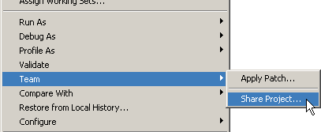
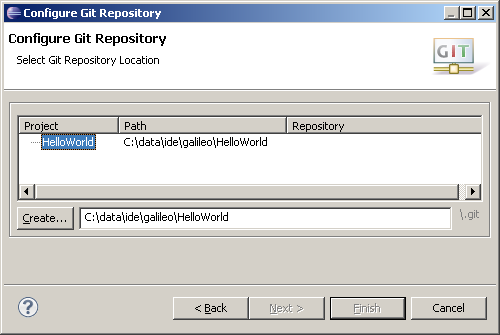
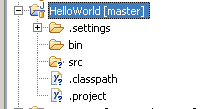
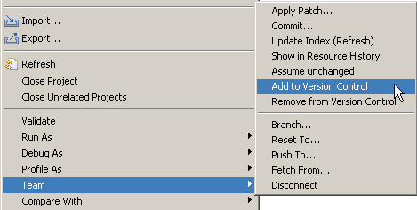
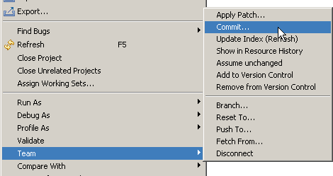
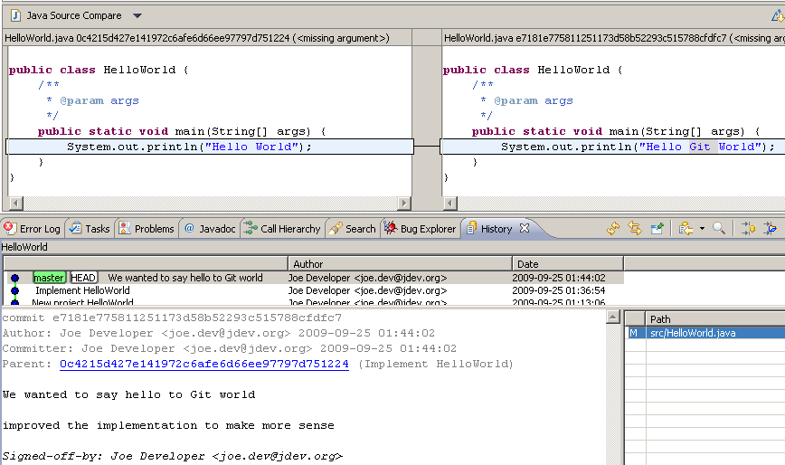

| EGit Reference | ||
|---|---|---|
|
|
||
| Adding a project to version control | ||
Create a new Java project "HelloWorld"

Select "File" -> "Team" -> "Share Project"

Select repository type "Git" and click "Next"

To configure the Git repository select the new Eclipse project HelloWorld

Click "Create" to initialize a new Git repository for the HelloWorld project. If your project already resides in the working tree of an exisiting GIT repository the repository is chosen automatically.

Click "Finish" to close the wizard.
The decorator text " master" behind the project shows that this project is tracked in a repository on the master branch and the question mark decorators show that the ".classpath" and ".project" files are not yet under version control

Select "Team" -> "Add to version control" on the project node

The plus decorators show that now the ".classpath" and ".project" files are added to version control
Create a file .gitignore in the project folder with the following content:
bin
This excludes the bin folder from GIT's list of untracked files. Add .gitignore to version control.

The file under ".settings" is not added to version control since it is by default on the list of ignored resources which can be changed in "Preferences" -> "Team" -> "Ignored Resources"

Select "Team" -> "Commit" from the context menu on the project

Enter a commit message explaining your change, the first line (separated by an empty line) will become the short log for this commit. By default the author and committer are taken from the .gitconfig file in your home directory. You may check the checkbox "Add Signed-of-by" to add a Signed-off-by tag. If you are committing the change of another author you may alter the author field to give the name and email address of the author. Click "Commit" to commit your first change.

Note that the decorators of the committed files changed.

Select "Team" -> "Show in Resource History" from the context menu to inspect the history of a resource


Create a new Java class HelloWorld and implement it, then add it to version control and commit your change. Improve your implementation and commit the improved class, the resource history should now show 2 commits for this class.

Double click "src/HelloWorld.java" in the Resource History View to open your last committed change in the Eclipse compare view

|
|
||
| Adding a project to version control |